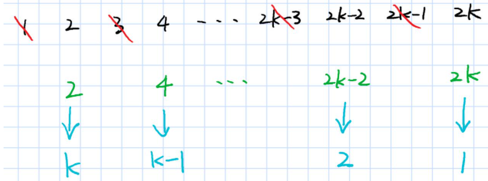
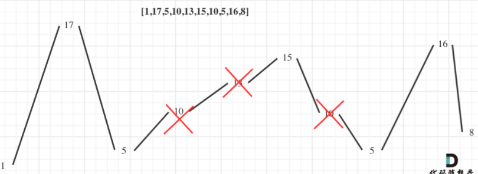

计算机真是奇妙又可气的东西, 功能写多了算法和数学就慢慢忘记，算法写多了业务又不熟练了。好的公司基本搞定中等题，稍微懂些困难题才比较稳。刷题数量感觉要400+
优先队列使用
给你一支股票价格的数据流。数据流中每一条记录包含一个 时间戳 和该时间点股票对应的 价格 。
不巧的是，由于股票市场内在的波动性，股票价格记录可能不是按时间顺序到来的。某些情况下，有的记录可能是错的。如果两个有相同时间戳的记录出现在数据流中，前一条记录视为错误记录，后出现的记录 更正 前一条错误的记录。
请你设计一个算法，实现：
更新 股票在某一时间戳的股票价格，如果有之前同一时间戳的价格，这一操作将 更正 之前的错误价格。
找到当前记录里 最新股票价格 。最新股票价格 定义为时间戳最晚的股票价格。
找到当前记录里股票的 最高价格 。
找到当前记录里股票的 最低价格 优先队列存储最大值和最小值
基本思路, 使用两个优先队列维护最大值和最小值。使用map维护查询。
因为可能存在后来插入的覆盖前面插入的，因此这里使用
stocks[timestamp] = price;起到覆盖作用, 而stocks.insert({timestamp, price});调用unique_insert不能起到覆盖的作用。由于可能被覆盖，因此最大堆出队不一定是最大值，这时候需要判断该值是否已经被覆盖，判断的方法只需要判断该price值是否存在map中即可。
class StockPrice {
public:
StockPrice() {
}
/// 更新值
void update(int timestamp, int price) {
if (timestamp>=currentTime) {
currentPrice = price;
currentTime = timestamp;
}
//stocks.insert({timestamp, price}); insert不会被覆盖
stocks[timestamp] = price;
minHeap.push({price, timestamp}); /// 插入{price, timestamp}, 会自动按照price排序得到最大堆或者最小堆
maxHeap.push({price, timestamp});
}
int current() {
return currentPrice; /// 当前值(时间戳最大对应的price)
}
int maximum() {
auto p = maxHeap.top();
while (stocks[p.second] != p.first) { /// 如果stocks[p.second] != p.first，说明该price被覆盖了
maxHeap.pop();
p = maxHeap.top();
}
return p.first;
}
int minimum() {
auto p = minHeap.top();
while (stocks[p.second] != p.first) {
minHeap.pop();
p = minHeap.top();
}
return p.first;
}
private:
int currentPrice;
int currentTime;
map<int, int> stocks;
priority_queue<pair<int,int>, vector<pair<int, int>>, less<pair<int, int>>> maxHeap;
priority_queue<pair<int, int>, vector<pair<int, int>>, greater<pair<int, int>>> minHeap;
};C/C++字符串转换
整数转换成字符串
- C语言使用
sprintf格式化成字符串, 注意这个办法不安全，因为有可能超出str的大小造成溢出。
int num = 123456;
char str[16] = {0};
int n = sprintf(str, " %d" , num);
printf("数字：%d 转换后的字符串为：%s\n",num,str);
printf("长度为: %d\n", strlen(str));
printf("返回为: %d\n", n);
return 0;
/// 输出
数字：123456 转换后的字符串为： 123456
长度为: 7
返回为7进一步的使用
#include<stdio.h>
#include<stdlib.h>
#include<time.h>
int main(void)
{
char str[100]; /// 缓冲区大小为100
int offset =0;
int i=0;
srand(time(0)); // *随机种子
for(i = 0;i<10;i++)
{
offset+=sprintf(str+offset,"%d,",rand()%100); // 格式化的数据写入字符串
}
str[offset-1]='\n';
printf(str);
return 0;
}- C++
to_string函数进行字符串格式化
int "%d"
float "%f"
double "%f
long "%ld
string to_string (int val);字符串转换成整数
- 基于C语言的转换
i = atoi(str.c_str());- C++11的转换
std::string str;
int i = std::stoi(str);最后一块石头的重量，背包问题
有一堆石头，用整数数组 stones 表示。其中 stones[i] 表示第 i 块石头的重量。
每一回合，从中选出任意两块石头，然后将它们一起粉碎。假设石头的重量分别为 x 和 y，且 x <= y。那么粉碎的可能结果如下：
如果 x == y，那么两块石头都会被完全粉碎；
如果 x != y，那么重量为 x 的石头将会完全粉碎，而重量为 y 的石头新重量为 y-x。
最后，最多只会剩下一块 石头。返回此石头 最小的可能重量 。如果没有石头剩下，就返回 0。
分析，可以想象把石头分成两堆，这两堆石头依次进行粉碎。可想而知，最后剩下石头的最小重量，目标可以是这两堆石头的重量相差最小。
理想情况下两堆石头重量一致，石头没有剩下。当重量不一致时，重量较小的一堆石头重量小于
sum(stones)/2。显然问题可以转化为，挑选石头，使在重量不高于sum(stones)/2时得到最大重量。这道题于是变成了目标和问题，也是背包问题。假设
f[i][j]为在抉择第i块石头，剩余重量为j 时的最大重量。这道题和leetcode 494目标和问题类似。
class Solution {
public:
int lastStoneWeightII(vector<int>& stones) {
/// 从stones中选择，凑成质量不超过sum(stones)/2的最大值
int n = stones.size();
int sum = 0;
for (auto& stone : stones) {
sum+= stone;
}
int target = sum/2;
vector<vector<int>> f(n+1, vector<int>(target));
for (int i = 1; i <= stones.size(); i++) {
for (int j = 1; j <= target; j++) {
//cout << f[i][j] << " ";
f[i][j] = f[i-1][j];
if (j >= stones[i-1]) {
f[i][j] = max(f[i-1][j], f[i-1][j-stones[i-1]]+stones[i-1]);
}
}
}
return sum - 2*f[n][target];
}
};最接近目标值的子序列和
这种问题与前者，最后一块石头的重要，类似。但是注意
- 如果数组长度特别大，但是数组的和不大 (sum<=10^5)，我们可以使用背包问题的方式来解决，其中dp[i]表示是否能组成容量为 i 的背包
- 如果数组长度不大(n<=20)，但是数值特别大的话，使用枚举子集的方法。(如果数组长度大于20，例如 40，直接枚举子集2^40会超时,需要折半查找)
给你一个整数数组 nums 和一个目标值 goal 。
你需要从 nums 中选出一个子序列，使子序列元素总和最接近 goal 。也就是说，如果子序列元素和为 sum ，你需要 最小化绝对差 abs(sum - goal) 。
返回 abs(sum - goal) 可能的 最小值 。
注意，数组的子序列是通过移除原始数组中的某些元素（可能全部或无）而形成的数组。
1 <= nums.length <= 40
-10^7 <= nums[i] <= 10^7
-10^9 <= goal <= 10^9显然本题使用枚举子集的办法, 对于一个集合长度为n，其子集的数量为2^n。可以使用二进制作为枚举子集代表, 例如1110可以表示在长度为4的集合中选取前三个元素。
如果数组nums[j], 长度为n ,那么可以构建一个长度为2^n的数组表示所有的挑选情况的序列和。这是一个动态规划的过程，例如1101可以表示挑选第1，3，4个元素，它可以简单由1100挑选第3，4个元素；以及挑选第1个元素个元素组成。
for (int i = 1; i < (1 << n); i++) { /// 一共由1<<n种情况
for (int j = 0; j < n; j++) { /// 从低位第一个为1的位开始相当于动态规划，如果1101 = 1100 + 0001
/// (i & (1 << j)) == 0
/// 基于二进制的选择, 然后求和
if ((i & (1 << j)) == 0) continue; /// 第一个为1的位,例如1110,
lsum[i] = lsum[i-(1<<j)] + nums[j];
break;
}
}- 先以中间为界，等分为两个序列。同时使用两个大小为
2^half的数组记录每个序列可能选取情况的和(一共有2^half个选取情况)
这样原数组的一个子序列和，必然为下列三者之一：
- lsum 中的某个元素；
- rsum 中的某个元素；
- lsum 中的某个元素与 rsum 中的某个元素之和。这时候排序，使用二分查找得到。
class Solution {
public:
int minAbsDifference(vector<int>& nums, int goal) {
int n = nums.size();
int half = n / 2;
int ls = half, rs = n - half;
/// 所有的挑选情况， 集合
vector<int> lsum(1 << ls, 0);
for (int i = 1; i < (1 << ls); i++) {
for (int j = 0; j < ls; j++) {
/// (i & (1 << j)) == 0
/// 基于二进制的选择, 然后求和
if ((i & (1 << j)) == 0) continue;
lsum[i] = lsum[i-(1<<j)] + nums[j];
break;
}
}
vector<int> rsum(1 << rs, 0);
for (int i = 1; i < (1 << rs); i++) {
for (int j = 0; j < rs; j++) {
if ((i & (1 << j)) == 0) continue;
rsum[i] = rsum[i-(1<<j)] + nums[ls+j];
break;
}
}
//// 每个选择的求和排序
sort(lsum.begin(), lsum.end());
sort(rsum.begin(), rsum.end());
/*
原数组的一个子序列和，必然为下列三者之一：
lsum 中的某个元素；
rsum 中的某个元素；
lsum 中的某个元素与 rsum 中的某个元素之和。
*/
int ret = INT32_MAX;
for (int x: lsum) {
ret = min(ret, abs(goal - x));
}
for (int x: rsum) {
ret = min(ret, abs(goal - x));
}
/// 同时处理两个数组
int i = 0, j = rsum.size() - 1;
while (i < lsum.size() && j >= 0) {
/// 二分查找
int s = lsum[i] + rsum[j];
ret = min(ret, abs(goal - s));
if (s > goal) {
j--;
} else {
i++;
}
}
return ret;
}
};- 同样的思路，使用2dfs。使用两个dfs, 先dfs前半段，再dfs后半段。时间复杂度从
2^n变成了2^(n/2). - 给定数组长度
1 <= nums.length <= 40。半段是1 ~ 20。一般在循环或递归十的九次方次左右就会超时, 直接递归2^40 = 10^12要超时，使用2dfs，2^20 = 10^6就能通过。
// 2^20 < 2^10*2^10 = 1024*1024 < 2*1000*1000，所以数组大小开2e6
const int N = 2e6;
class Solution2 {
public:
vector<int> q;
int n,cnt,goal,res;
/// dfs得到前半段的所有情况
void dfs1(vector<int>& nums,int idx,int sum)
{
// 找到一个可行解
if(idx==(n+1)/2)// n向上取整，前半部分为[0,n/2]
{
q[cnt++]=sum;
return;
}
// 枚举两种情况，一种是选上第idx个元素，另一种是不选第idx个元素
dfs1(nums,idx+1,sum);
dfs1(nums,idx+1,sum+nums[idx]);
}
void dfs2(vector<int>& nums,int idx,int sum)
{
// 找到一个可行解
if(idx==n)// 后半部分为[n/2+1,n-1]
{
/// cnt是前半段所有情况的大小, 也就是2^half
int l=0,r=cnt-1;
// 二分查找再前半段q中找到使q[mid]+sum最逼近goal的位置(<= goal)
while(l < r)
{
// 向上取整，避免 left 取不到 right 造成死循环
int mid=(l+r+1)>>1;
/// 当前的sum加前半段的值
if(q[mid]+sum<=goal)l=mid;// mid满足check，向右逼近，mid可能就是目标值，所以l=mid
else r=mid-1;// mid不满足check，向左逼近，mid不可能为目标值，所以r=mid-1
}
// 二分查找得到的r是<=goal下最逼近goal的位置
res=min(res,abs(q[r]+sum-goal));
// 若r有下一个元素，那么我们最近goal的元素要么在 <=goal 的最大位置产生，要么在 >goal 的最小位置产生
// 所以每次更新res时，注意这两个位置
if(r+1<cnt)
res=min(res,abs(q[r+1]+sum-goal));
return;
}
// 遍历后半段，枚举两种情况，一种是选上第idx个元素，另一种是不选第idx个元素
dfs2(nums,idx+1,sum);
dfs2(nums,idx+1,sum+nums[idx]);
}
// 题解：双向dfs，dfs1枚举2^20中选法，然后排序前半段得到的子序列和数组，然后再枚举后半段的子序列，二分前半段的子序列和数组，使得前半段的子序列和与后半段的子序列和相加的结果接近goal
int minAbsDifference(vector<int>& nums, int _goal) {
q.resize(N);
n=nums.size(),cnt=0,goal=_goal,res=INT32_MAX;
// 先搜索前一半，给搜索完的数组排个序，便于在搜索后一半数组的时候进行二分
dfs1(nums,0,0);
/// 排序
sort(q.begin(),q.begin()+cnt);
// 搜索后一半
dfs2(nums,(n+1)/2,0);
return res;
}
};将数组分成两个数组并最小化数组和的差
给你一个长度为 2 * n 的整数数组。你需要将 nums 分成 两个 长度为 n 的数组，分别求出两个数组的和，并 最小化 两个数组和之 差的绝对值 。nums 中每个元素都需要放入两个数组之一。
请你返回 最小 的数组和之差。- 该题和上面最接近目标值的子序列和的区别在于，设置子序列长度为n。处理方法是使用一个二维数组
vector<vector<int>>s。第一个维度表示现在选取元素的个数，第二个维度是当前选取个数下的和。显然和是一个序列。 - 基于二进制的思想，遍历
int i=0; i<1<<n; i++, 例如1110表示选取个数为3，选取的元素为第2，3，4个。递归的复杂度是指数的。
class Solution {
public:
int minimumDifference(vector<int>& nums) {
int n = nums.size();
n/=2;
/// 需要用二维数组
vector<vector<int>>s(n+1);
int res = INT32_MAX;
/// 是s[cnt]表示选择了cnt个数, 选择的数和不选择的数的差组成的序列
/// 例如1110， 表示选择第2，3，4个数与不选第1个数，的差
for(int i=0; i<1<<n; i++){
int sum = 0, cnt = 0;
for(int j=0; j<n; j++){
if(i>>j&1){
sum+=nums[j];
cnt++;
}else {
sum-=nums[j];
}
}
s[cnt].push_back(sum);
}
/// 排序，对每一个选择了cnt的数排序
for(int i=0; i<s.size(); i++)sort(s[i].begin(), s[i].end());
/// 处理后半序列，共有1<<n种情况
for(int i=0; i<1<<n; i++){
int sum = 0, cnt = 0;
for(int j = 0; j < n; j++){
if(i>>j&1){
sum+=nums[n+j];
cnt++;
}else {
sum-=nums[n+j];
}
}
// 这里有cnt个正号，要到前面取n-cnt个正号的数组匹配
/// 从s[n-cnt]里找, s[n-cnt]存储的是选择和不选的差,sum也是选择和不选的差.
/// 二分查找，找选择和不选差<=0的数
int l = 0, r = s[n-cnt].size()-1;
while(l<r){
int mid = l+r+1>>1;
/// mid可能是理想值
if(s[n-cnt][mid] + sum<= 0 )l=mid;
else r = mid-1;
}
/// 目标元素可能是s[n-cnt][mid]<= -sum的最大元素或s[n-cnt][mid]<= -sum的最小元素
/// s[n-cnt][l]表示还有n-cnt个可以选的条件下的和
res = min(res, abs(sum + s[n-cnt][l]));
if(r<s[n-cnt].size()-1)res = min(res, abs(sum + s[n-cnt][r+1]));
}
return res;
}
};- 可以使用C++
lower_bound的函数进行二分查找。
class Solution2 {
public:
int minimumDifference(vector<int>& nums) {
int n=nums.size()/2;
/*
首先，预处理前n个元素，有2的n次方种状态（即每个元素选或不选），用二进制位的1代表选，0代表不选。
换句话说，用1代表元素归入第一个数组，用0代表归入第二个数组。
这里用sum_pre表示前n个数，归为第一个数组的，和归为第二个数组的元素之差。
*/
vector<int>pre[16]; //pre[i]表示选取i个元素时，和的集合
for(int i=0;i<(1<<n);i++){
int sum_pre=0,bit=0;
for(int j=0;j<n;j++){
if((i>>j)&1){
sum_pre+=nums[j];
bit++;
}else{
sum_pre-=nums[j];
}
}
pre[bit].push_back(sum_pre);
}
//排序，为了后面二分查找。顺便去重，也可以不去重
for(int i=0;i<=n;i++){
sort(pre[i].begin(),pre[i].end());
/// unique用于去重，其中把重复的元素放到了后面。
/// 执行完unique()：从容器的开始到返回的迭代器位置的元素是不重复的元素，而从返回的迭代器位置到vector.end()的元素都是没有意义的
pre[i].erase(unique(pre[i].begin(),pre[i].end()),pre[i].end());
}
/*
考虑后n个数。若后n个数选出bit个归入第一个数组，那么只需从前n个数中拿n-bit个归入第一个数组。
选数的方式与上面相同，枚举2的n次方个状态。
对于每个状态，利用二分查找从上面的数组pre[n-bit]中找到一个数k，使得k加上当前的sum_later尽量接近0
记录下最小的差值即可。
*/
int ans=1e9+7;
for(int i=0;i<(1<<n);i++){
int sum_later=0,bit=0;
for(int j=0;j<n;j++){
if((i>>j)&1){
sum_later+=nums[j+n];
bit++;
}else{
sum_later-=nums[j+n];
}
}
/// lower_bound( begin,end,num)：从pre[n-bit]数组的begin位置到end-1位置二分查找第一个大于或等于num的数字，找到返回该数字的地址
/// n-bit表示还有n-bit可以选
auto it=lower_bound(pre[n-bit].begin(),pre[n-bit].end(),-sum_later);
if(it!=pre[n-bit].end())
ans=min(ans,sum_later+*it);
}
return ans;
}
};火柴拼正方形
输入为小女孩拥有火柴的数目，每根火柴用其长度表示。输出即为是否能用所有的火柴拼成正方形。
示例 1:
输入: [1,1,2,2,2]
输出: true
解释: 能拼成一个边长为2的正方形，每边两根火柴。
给定的火柴长度和在 0 到 10^9之间。
火柴数组的长度不超过15。- 对于每一个火柴，都有四种决策，正方形的第1,2,3,4个边。根据此，可以使用dfs搜索
- 稍微不同寻常的思路，但这里dfs实际就是二维的搜索，一个维度是决策，一个维度是数组元素。而在全排列这种递归，则更多是选择构建的决策树。
- dfs的原理就是遍历所有可能存在的情况。
class Solution {
public:
bool makesquare(vector<int>& matchsticks) {
int sum=0;
for(int num:matchsticks){
sum+=num; /// 求和
}
if(sum%4!=0)return false;
vector<int>adds(4,0); /// 记录每条边的长度
sort(matchsticks.begin(),matchsticks.end(),greater<int>()); /// 从大到小排序
return dfs(0,adds,matchsticks,sum);
}
bool dfs(int index,vector<int>&adds,vector<int>&matchsticks,int sum){
if(*max_element(adds.begin(),adds.end()) > sum/4)return false; /// 每条边长度不能超过sum/4
if(index ==matchsticks.size()){
/// 四条边一样
if(adds[0]==adds[1]&&adds[1]==adds[2]&&adds[2]==adds[3]){
return true;
}
else return false;
}
for(int i=0;i<4;i++){ /// 四条边选择火柴, 每个火柴有四种决策
adds[i]+=matchsticks[index]; /// 选择火柴
if(dfs(index+1,adds,matchsticks,sum))return true;
adds[i]-=matchsticks[index];
}
return false;
}
};约瑟夫环问题
约瑟夫问题是个著名的问题：N个人围成一圈，第一个人从1开始报数，报M的将被杀掉，下一个人接着从1开始报。如此反复，最后剩下一个，求最后的胜利者。
模拟整个游戏过程，时间复杂度为O(nm)
递推公式,
首先 n 个人的编号依次是 0,1,..,n-1 ，然后踢掉了编号为
k = (m-1)%n的人(第m个人)，这时候剩下的人编号为0,1,..., k-1, k+1, ...,n-1(k = m-1)。计算下一个踢掉的人时, 从k+1开始计数，共n-1个人。我们可以做一个映射, 将k+1映射成编号为0的第一个人。如果映射后的编号为x, 那么映射前的编号为
(x+m)%n。因此，在人数为
n-1以及位置映射条件下得到剩下人编号为x, 则n个人编号为(x+m)%n。f(n) = (f(n-1) + m) % n从后向前递推，执行完毕之后最后的胜利者编号为0(第一个人), 且一共删除了n-1次。可以使用
(last += m) %= i
/// 从n个人中删除编号为m的数字
class Solution {
public:
int lastRemaining(int n, int m) {
int last = 0;
for (int i = 2; i <= n; ++i) {
(last += m) %= i; // i为删除前元素数量
}
return last;
}
};基于编号映射可以解决约瑟夫环的变种问题。
leetcode 390消除游戏
给定一个从1 到 n 排序的整数列表。
首先，从左到右，从第一个数字开始，每隔一个数字进行删除，直到列表的末尾。
第二步，在剩下的数字中，从右到左，从倒数第一个数字开始，每隔一个数字进行删除，直到列表开头。
我们不断重复这两步，从左到右和从右到左交替进行，直到只剩下一个数字。
返回长度为 n 的列表中，最后剩下的数字。
如果 n=2k ，那么如上图所示，第一轮消除完了之后，剩下的数字就是绿色的偶数部分。第二轮重新编号，就是蓝色部分。可以发现
f(2k)=2(k+1−f(k)), 其中f(2k)表示初始2k个数字进行的编号。如果n=2k+1, 也是
f(2k+1)=2(k+1−f(k)), f(2k+1)表示有2k+1个数字。
显然最后一个剩下的数字编号一定为1，因此可以自顶向下的动态规划
class Solution {
public:
int lastRemaining(int n) {
return n==1 ? 1 : 2*(n/2+1-lastRemaining(n/2));
}
};
- 相比于自底向上的动态规划需要关系迭代了几次，自顶上下的递归只需要关系初值，不用关心迭代了几次，预先开辟多少空间。
摆动序列
- 贪心算法不难，但在于怎么用
如果连续数字之间的差严格地在正数和负数之间交替，则数字序列称为 摆动序列 。第一个差（如果存在的话）可能是正数或负数。仅有一个元素或者含两个不等元素的序列也视作摆动序列。
例如， [1, 7, 4, 9, 2, 5] 是一个 摆动序列 ，因为差值 (6, -3, 5, -7, 3) 是正负交替出现的。
相反，[1, 4, 7, 2, 5] 和 [1, 7, 4, 5, 5] 不是摆动序列，第一个序列是因为它的前两个差值都是正数，第二个序列是因为它的最后一个差值为零。
子序列 可以通过从原始序列中删除一些（也可以不删除）元素来获得，剩下的元素保持其原始顺序。
给你一个整数数组 nums ，返回 nums 中作为 摆动序列 的 最长子序列的长度 。用示例二来举例，如图所示：

删除单调坡度上的节点（不包括单调坡度两端的节点），那么这个坡度就可以有两个局部峰值。整个序列有最多的局部峰值，从而达到最长摆动序列。
实际操作上，其实连删除的操作都不用做, 只需要求转弯的地方就可以。例如1->17, 17->5, 5->10, 15->10…
class Solution {
public:
int wiggleMaxLength(vector<int>& nums) {
if (nums.size() <= 1)
return nums.size();
int curDiff = 0; // 当前一对差值
int preDiff = 0; // 前一对差值
int result = 0;
for (int i = 0; i < nums.size() - 1; i++) {
curDiff = nums[i + 1] - nums[i];
// 出现转弯的地方, 注意第一个元素也是转弯地方
if ((curDiff > 0 && preDiff <= 0) || (preDiff >= 0 && curDiff < 0)) {
result++;
preDiff = curDiff;
}
}
return result+1;
}
};